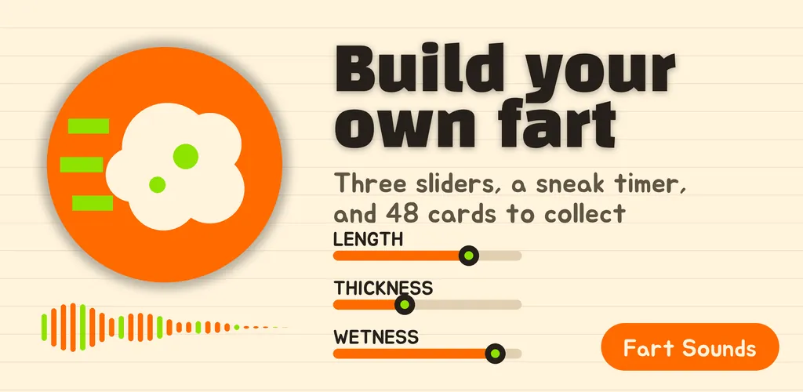
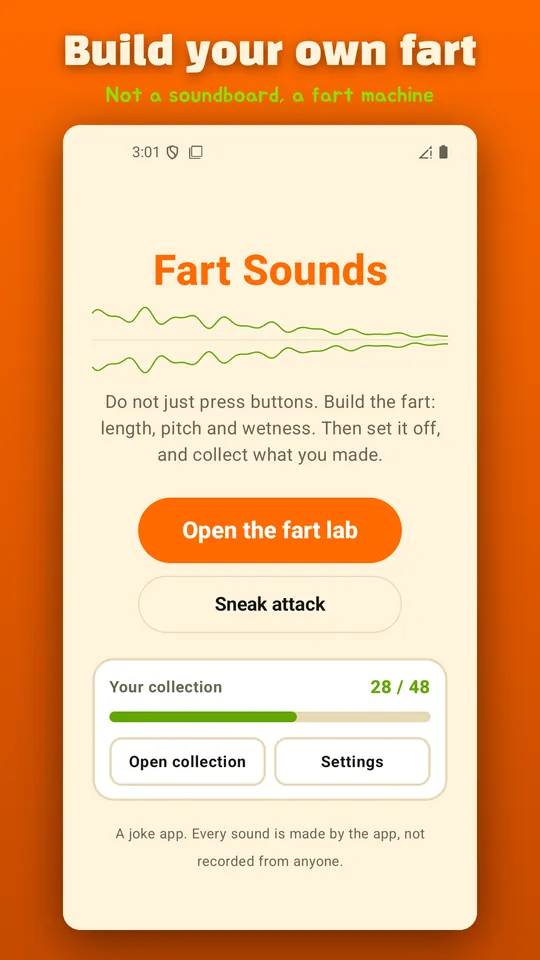
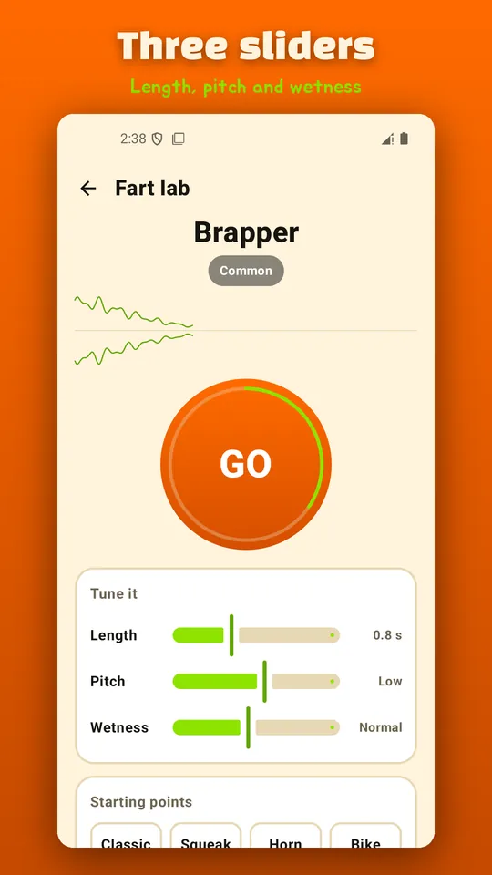
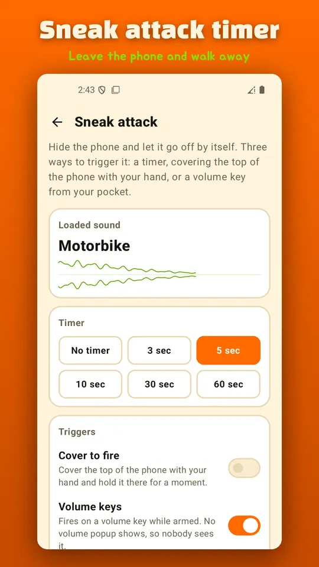
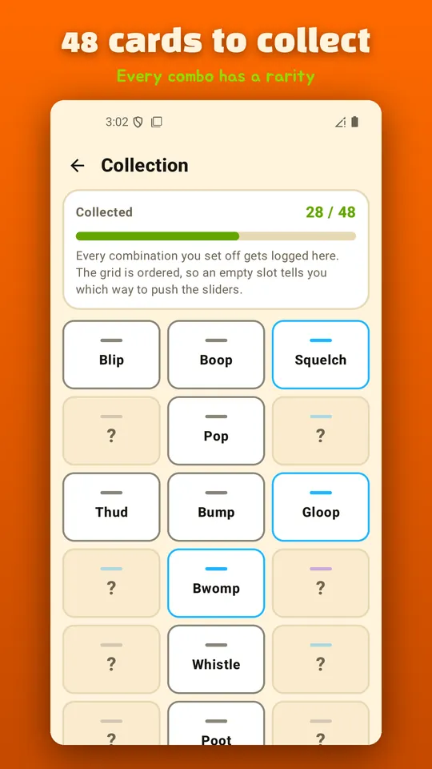
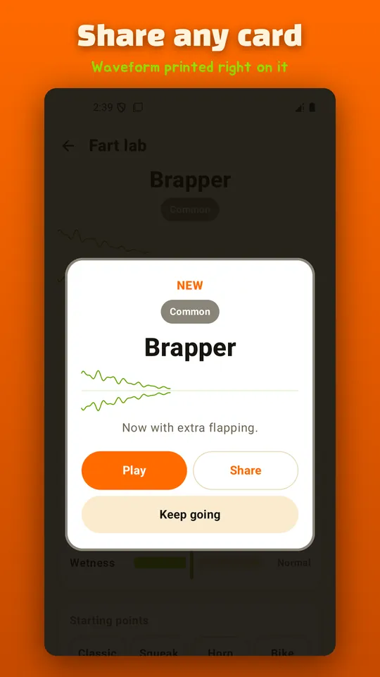
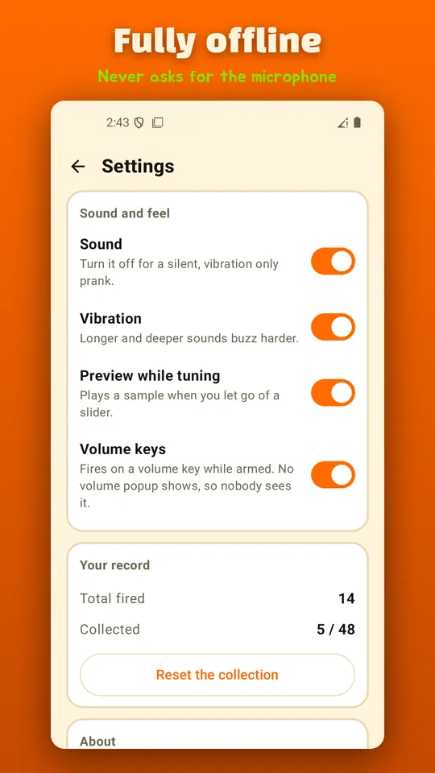

Fart Sounds Maker: Sneak Timer
Make your own fart sounds with 3 sliders. Sneak timer, cover to fire, 48 cards.







About this app
Not a soundboard. A fart machine you actually build.
Most fart sound apps hand you twenty recordings and a grid of buttons. This one synthesises the sound on the spot. Nothing is a sample, so moving a slider a little really does change what you hear.
Three sliders, endless farts
Length from a short blip to a long drawn out rip.
Thickness from a thin squeak to a deep rumbling blast.
Wetness from bone dry to bubbling and sputtering.
Combine the three axes and you get fart sounds that are genuinely different from each other. If you would rather not start from scratch, eight presets give you a place to begin and you can nudge them from there.
Sneak attack - leave the phone behind
Set the timer, put the phone on a desk and walk away. The screen goes black so nobody can tell it is on. You can also cover the top of the phone with your hand to set it off through the proximity sensor, or fire it quietly from your pocket with the volume keys.
A collection of 48 cards
Every launch registers that combination as a card. Each one has a name and a rarity, so there are common mixes and a few that take some hunting. Any card can be turned into a shareable image with its waveform printed on it.
Made for these moments
A quiet classroom or an open plan office when you leave your phone on a friend's desk. A party where you need a punishment nobody expects. Or just a boring afternoon when you want to build a stupid noise.
Small and quiet
Works fully offline. Never asks for the microphone and records nothing. Around 3MB, no sign up.
Please note
This is a joke app. Every sound is generated by the app itself, so there is no recording of any real person anywhere in it. Please do not use it to bother people who did not ask for it, and keep the volume sensible in public places.
About ads
The app is free and supported by ads. A banner sits at the bottom, and a full screen ad appears only when you open the Fart Factory or the Sneak Attack screen, at most once a minute. There is never an ad on the launch button itself.
Android · free with ads · Developer: RealTunaLove · Store listing in 17 languages
Background story: why I built it